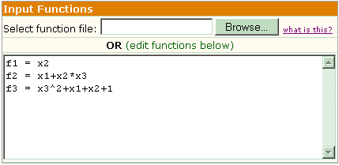
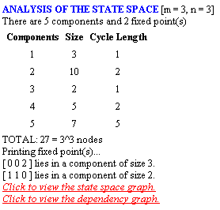
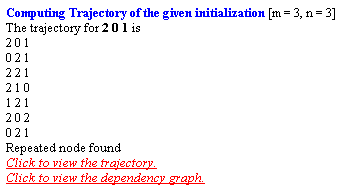
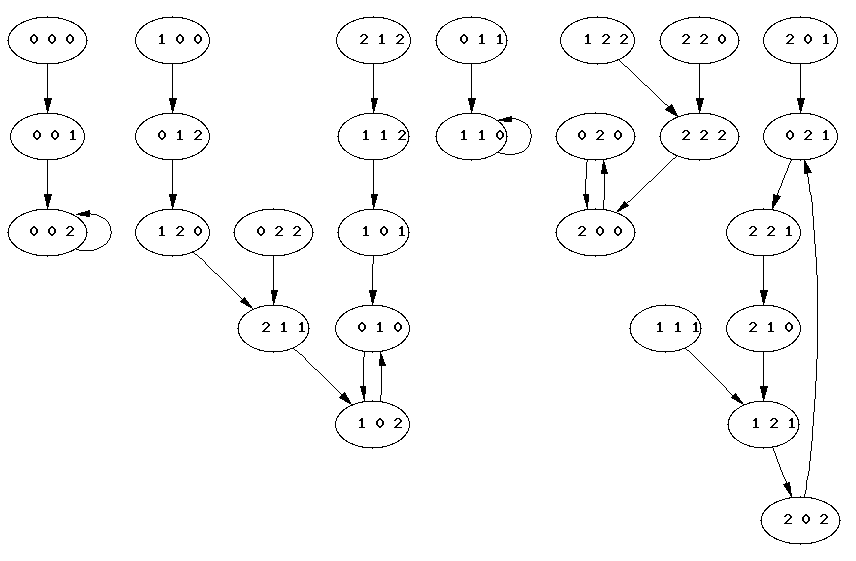
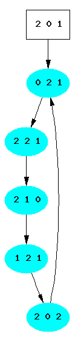
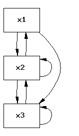

Description
VADD is a web-based tool for the visualization and analysis of the dynamics of multi-state,
discrete models of biological networks. Multi-state discrete models are characterized
by a collection of functions. For a network of n nodes, the corresponding
discrete model will have n functions, where the i-th function describes
the state transitions of the i-th node in the network. The user of the
software provides the size of the state space, by indicating the number of nodes (n)
and the number of possible states per node (m), and a text file containing
transition (polynomial) functions. VADD analyzes dynamcis using a combination
of simulation and abstract algebra techniques. The method of computation and
the output will depend on the size and type of the network as well as other options selected by
the user.
What is number of states per node input?
We will refer to this field as the m value. It is a number that denotes the cardinality of the state
set of the user's discrete network. The software accepts positive integers upto 99.
This value gives the total number of states that a node in the
network can have. For example, if m value = 3, then the possible states
for any node are 0, 1, and 2. Currently the software will not display the graph
of the state space if m value is very high (see Limitations).
What is the number of nodes input?
We will refer to this field as the n value. The number of nodes is the number of agents/nodes/constituents in the
user's network. Since biological systems are finite in the number of agents/nodes/constituents,
then number of nodes is assumed to be finite.
Format of the input functions
Each node of the user's network is represented by a variable. Variable names are
x1, x2, etc. Function names are f1, f2, etc. The convention is that fk is the
function which describes the state transitions of the node represented by xk.
The user can either upload a function file or edit/type functions in the text box provided.
DVD wil use the functions from the input text box only when the user DOES NOT select a file to upload
The functions should follow the following formatting rules:
The functions should begin with f followed by an integer, example f1, f2, f3.....fn, where n is the number of nodes
Use * for multiplication, + for additions and ^ for exponents.
The variables should begin with x followed by an integer, example x1, x2, x3....xn, where n is the number of nodes
|  |
What is the GINsim File option?
The GINsim File option allows the user to upload a GINsim file to be analyzed
by our software. GINsim is a program
that allows a user to build a logical model based on some biological system.
What is Network Options?
VADD will simulate dynamics for Small Networks (10 nodes or less),
meaning it computes the transition states from all possible initializations.
When simulating, VADD will output the analysis results as well as the graph
of the state space. For Large Networks VADD uses algebra to solve
for fixed points and limit cycles up to length 5. VADD uses a separate
algorithm to compute dynamcis in the case of Conjunctive/Disjunctive
Networks. Conjunctive Boolean networks consist of functions containing only
one monomial term, i.e. the functions use only the AND operator. Conversely,
Disjunctive Boolean networks consist of functions which use only the OR
operator. Note that the Conjunctive/Disjunctive option only works for
functions defined in a Boolean ring, i.e. there can be only two states per node.
When input is a large network or a conjunctive/disjunctive network, VADD
diplays the results as a list. Note that Large Networks
and Conjunctive/Disjunctive do not work in conjunction with Options for Small Networks.
What is the update schedule input?
This will determine the order in which to evaluate the functions.
Format of input functions
The software provides the user withs the option to specify how the operations in the function file should be interpreted.
For example, 'x1*x2' could be interpreted as polynomial multiplication of variables or as the Boolean AND operation.
If the user provides functions that are in the Boolean format, DVD will convert the Boolean functions to polynomial functions to do the computations.
The Boolean function file must adhere to the following format:
| Boolean operator | Written as |
|
|
|
|
|
|
|
|
|
Analysis of the state space
If the user selects the option to view the All trajectories from all possible initial states, the
software computes the number of connected components in the state space, as well
as some statistics of the components. It displays the number of states in a component
and the length of the cycle. (Since these discrete models are finite, each component
necessarily has a cycle. Because the models are deterministic - they are characterized
by a set of rules, given by functions - there is only one cycle per component.)
If there are fixed points (i.e., cycles of length 1), then it prints the state,
along with the size of its component. If the user selects the option to view the graphs,
the corresponding links will be displayed which will show the graph. Below is a snapshot of the output once the user enters the values
in the interface and clicks on 'Generate'
|  |
Trajectory of one initialization
The user can view the trajectory of one initialization only, if he selects that option. The input text box next to the option is where the user needs to provide the initialization. The states in the initialization should be separated by spaces. For example 1 0 0 0 1 , 2 0 3 2 1 or 11 12 10 0 1. It is important to separate the states by spaces in order for the software to distinguish between the different states. On clicking Generate, the trajectory will be printed in a vertical fashion (one on each line) and will stop once it finds a repeated pattern. If the user has selected the option to view the state space graph, a link will be displayed which will show the graph and the cycle will be colored. The initial states provided by the user will be in the box shaped node. Below is a snapshot of the trajectory generated using example functions from Figure a with initialization 2 0 1
|  |
Viewing the graph
The user has an option to view the graph of the entire state space or a single trajectory in the state space, AND the dependency graph of the network
described by the input functions. The user can also select the format of the image file from the list of formats (gif, jpg, png and ps)
Based on the users selection, a link to view the selected graph is available
Fig (d) graph below is an example state space graph,
Fig (e) graph below is the trajectory generated using initialization 2 0 1 and Fig (f) graph
below is an example dependency graph
|  |
|  |
|  |
Limitations
The drawing of the state space is done by the graphics software GraphViz.
Due to limitations in viewing, we restrict the total number of states in the state
space to 1000; that is, m^n <= 1000, where m = m value
and n = number of nodes. Hence, we produce graphics only
for Small Networks. Further, due to the increasing computational complexity of
computing limit cycles as the length of the cycles increases we only allow
computation of limit cycles up to length 5 for the Large Networks option.
Credits
Hussein Vastani (Developer)
Nick Eriksson (Developer)
Reinhard Laubenbacher
Abdul Jarrah
Brandilyn Stigler
Franziska Hinkelmann (Please email us if you have any problems)
Madison Brandon
Bonny Guang
Rustin McNeill